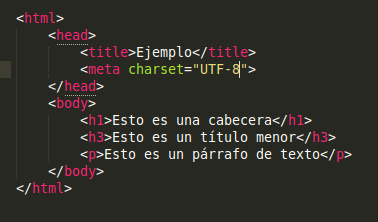
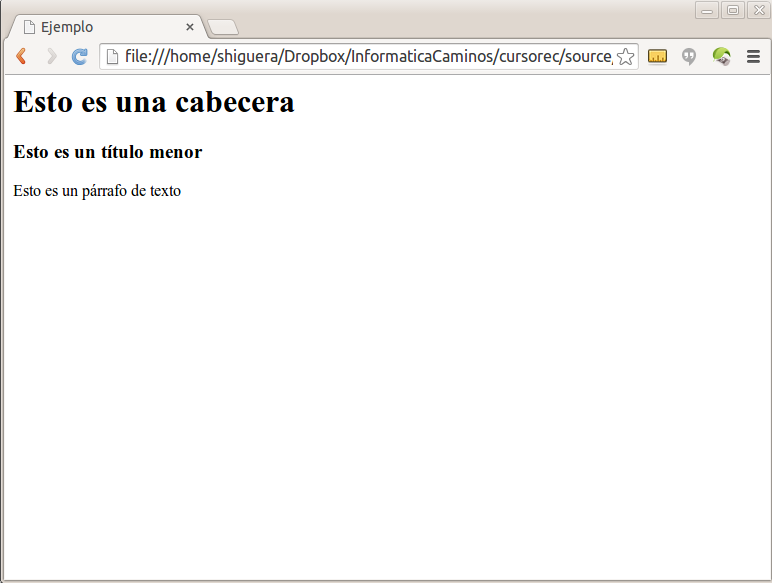
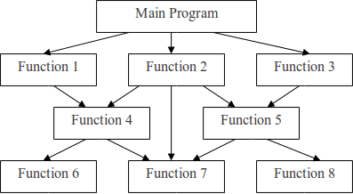
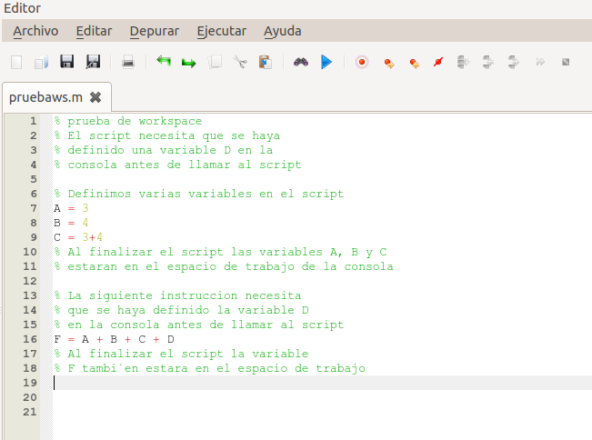
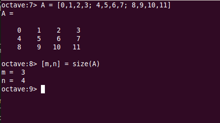
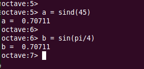

Un lenguaje de programación es un lenguaje formal creado para transmitir instrucciones a un ordenador. Hay numerosos lenguajes de programación de ordenadores. Los lenguajes proporcionan conceptos que permiten razonar en términos abstractos sobre los problemas a resolver. Hay diferentes formas de abordar el problema de transmitir instrucciones a un ordenador. A lo largo de la historia de la programación han ido surgiendo diferentes modelos de programación, plasmados en lenguajes de programación concretos y que han dado lugar a una división de los lenguajes de programación según el modelo que utilizan. A dicho modelo de programación se le suele denominar el paradigma de programación utilizado por el lenguaje.
En los lenguajes declarativos no se le dice al ordenador cómo resolver el problema, lo que se hace es describir el problema, siendo una instancia posterior quién utilizará esa información para calcular la solución. Un ejemplo de este tipo de lenguajes son los lenguajes utilizados para describir documentos, por ejemplo. Es el caso del HTML y del XML. Se describe el documento y el ordenador utilizará algún tipo de interprete del lenguaje para crear el documento en cuestión. El ejemplo que se muestra a continuación es el de un documento muy simple creado en lenguaje HTML:
Mostramos a continuación cómo se interpreta ese código al utilizar el navegador Chrome. Las páginas WEB que acostumbramos a utilizar están escritas en lenguaje HTML. Los navegadores que utilizamos son intérpretes del lenguaje HTML.
Estas líneas que estás leyendo, están escritas en el lenguaje Sphinx, que es un lenguaje declarativo pensado para escribir este tipo de documentos. El interprete del lenguaje lo convierte posteriormente en código HTML, que probablemente es la versión que estás leyendo, aunque podría ser también que estuvieras leyendo la versión pdf generada por el interprete que hay en el portal donde está colgada esta documentación, y que permite transcribir los documentos a formato pdf, que es a su vez otro lenguaje declarativo para describir documentos.
Sin duda, el rey de los lenguajes declarativos para definir documentos es LaTeX. Se trata de un lenguaje destinado a escribir documentos, fundamentálmente científicos, que proporciona un tratamiento tipógrafico de alta calidad y un editor de fórmulas incomparable. LaTeX proporciona, además, herramientas que permiten gestionar de manera muy eficiente la estructuración del documento y la gestión de referencias bibliográficas, índices y tablas. El concepto de trabajo al escribir documentos con LaTeX es diferente al de los procesadores de texto habituales, permitiendo centrarse en el contenido del documento y no en su formato o presentación.
Existen otros lenguajes declarativos que no están destinados a describir documentos o juegos de datos, sino a obtener la solución de problemas concretos de computación. Merece la pena destacar aquí el SQL, lenguaje comúnmente utilizado en el acceso a las bases de datos. Otro tipo particular de lenguajes declarativos son los lenguajes de programación funcional, como Lisp, Haskell o Scala.
Por otra parte están los lenguajes imperativos, que, en lugar de limitarse a describir lo que quieren obtener como hacen los lenguajes declarativos, detallan las instrucciones que tiene que realizar el computador en cada momento para llegar a la solución del problema a resolver.
Dentro de los lenguajes del tipo imperativo, un grupo importante lo constituyen los lenguajes basados en la programación estructurada. La programación estructurada es un paradigma de programación que divide los programas en rutinas y subrutinas, y que utiliza solamente tres estructuras: secuencia, selección (if y switch) e iteración (bucles for y while). Dentro de la programación estructurada es donde se encuadra el lenguaje m utilizado por Octave y Matlab.
Otro grupo muy importante de lenguajes de programación imperativa, (otro paradigma de programación), lo constituyen los lenguajes de programación orientada a objetos. En estos lenguajes se definen los denominados objetos que tienen propiedades y métodos mediante los cuales pueden ser manipulados. Dentro de la programación orientada a objetos destacan el lenguaje C++ (se lée C plus plus) y el lenguaje Java.
Existen también lenguajes que pueden ser utilizados bajo distintos paradigmas de programación, lenguajes multi-paradigma. En general, casi todos los lenguajes permiten formas de utilización mixtas entre unos paradigmas y otros, si bien suelen estar más pensados para un paradigma de programación concreto. Dentro de los lenguajes multi-paradigma vamos a destacar aquí el lenguaje python, que permite abordar los programas desde un punto de vista de programación estruturada, como programación orientada a objetos o como programación funcional.
Los programas suelen estar divididos en diferentes unidades lógicas que interactuan y dependen unas de otras. A cada una de estas unidades lógicas en que subdividimos un programa se le suele llamar módulo. Según el tamaño y complejidad del programa, los módulos lógicos se podrán corresponder con un fichero concreto, o con un directorio completo repleto de ficheros, o en el extremo contrario, los módulos podrían ser cada una de las rutinas existentes en el único fichero de cierto programa, o cada una de las secciones diferenciadas de una función.
La estructura de módulos que componen un programa, junto con las relaciones y dependencias que se establecen entre ellos es lo que se denomina la arquitectura del programa. Veamos un ejemplo, pongamos que tenemos un programa que calcula el momento flector en una viga. Supongamos que nuestro programa utiliza unas rutinas, desarrolladas anteriormente, que permiten calcular el momento flector cuando la viga es biapoyada y otro programa que calcula el momento flector cuando la viga es empotrada. Esto hace que nuestro programa dependa del módulo de cálculo de la viga biapoyada y del módulo de cálculo de la viga empotrada. A su vez nuestro programa podría constar de varios módulos: un módulo principal que proporciona el arranque y la estructura general del programa, otro módulo encargado de acceder y utilizar el módulo de la viga apoyada, otro módulo que permite acceder al módulo de la viga empotrada, un módulo que permite imprimir los resultados y un módulo encargado de hacer un gráfico con el resultado. Si el programa lo estuvieramos desarrollando en Octave, cada uno de estos módulos se podría corresponder con una función desarrollada en un fichero .m.
En la programación estructurada los programas están construidos a base de subrutinas. El equivalente en Octave de las subrutinas son las funciones.
La arquitectura más simple sería la de un programa que constara de una única subrutina. En Octave se trataría de un programa compuesto por una única función y un único fichero .m. Es habitual que los programas consten de varias funciones repartidas en uno o más ficheros y que dependen unas de otras. La dependencia hay que entenderla en el sentido de que entre las instrucciones utilizadas por algunas de estas funciones están llamadas a las otras funciones.
Vamos a tratar de explicar la dependencia entre funciones con un ejemplo. Supongamos que desarrollamos una función que permite calcular la solución de un sistema de ecuaciones y que dicha función utiliza, entre sus instrucciones, la llamada a otra función que calcula la inversa de una matriz. Nuestra función utiliza, y por tanto depende de, la función que calcula la inversa de una matriz. Si la función inversa() cambia o falla, nuestra función se verá afectada. De hecho, las funciones predefinidas que utilizamos en los programas de Octave son funciones desarrolladas por otros y cuyos ficheros .m están guardados en algún lugar de la instalación de Octave. Nuestras programas dependen de ellas, en tanto las utilicen.
Hay algunos principios generales que deben cumplir las dependencias entre módulos en la programación estructurada. Por ejemplo, no conviene establecer relaciones cíclicas entre módulos. No debe suceder que el módulo A dependa del módulo B, que a su vez depende del módulo A. Puede darse una relación cíclica con más intervinientes: El módulo A depende de B, quien a su vez depende del módulo C que depende del módulo A. Estas relaciones cíclicas pueden dar lugar a errores en el desarrollo de los programas y, en cualquier caso, llevan a arquitecturas difíciles de expandir o mantener.
Durante el curso aprendemos a utilizar tres maneras de interactuar con Octave: la consola, los scripts y las funciones.
La manera más inmediata de operar Octave es a través de la consola. El funcionamiento es del tipo petición-respuesta habitual en los entornos de consola. El usuario teclea una instrucción válida de Octave en la consola, pulsa la tecla return y Octave muestra el resultado de la ejecución de la instrucción en la consola, o un mensaje de error si es que se ha producido alguno. Esto permite utilizar Octave como una calculadora científica avanzada y es uno de los puntos fuertes de Octave de cara a su utilización por ingenieros y técnicos en general.
Otra forma de operar Octave es a través de los denominados scripts. La palabra script se traduce al castellano por guión, aunque en el ámbito de la programación es habitual utilizar la palabra original en inglés. Se trata de una serie de instrucciones dadas al ordenador y que queremos ejecutar una tras otra. Lo que se hace es crear un fichero .m y escribir las instrucciones que queremos que ejecute Octave. Para ejecutar un script desde la consola de Octave, tendremos que situarnos en el directorio donde está guardado el fichero .m del script, y teclear el nombre del fichero (sin la extensión .m). El resultado será que Octave irá ejecutando, una a una, las instrucciones contenidas en el fichero de script.
Ejecutar un script es equivalente a ir ejecutando en la consola, una a una, las instrucciones que aparecen en el fichero .m del script. Esto implica que el espacio de trabajo del script, (las variables activas en memoria en cada momento), es el mismo que el de la consola. Si definimos una variable en el script, cuando termine la ejecución del mismo la variable estará en el espacio de trabajo. Análogamente, si tenemos una variable definida en el espacio de trabajo de la consola, podremos acceder a ella desde dentro del script.
Note
Tip: La barra de herramientas de la ventana del editor de Octave tiene un botón para ejecutar el programa activo. Si pulsamos y pasamos a la ventana de la consola de comandos veremos que lo que hace es ejecutar el programa por consola. Los resultados que se obtienen o los mensajes de error que pudieran aparecer se mostrarán por la ventana de la consola. El comando de ejecución pasará a formar parte del historial de comandos y podremos acceder a él a través del comando history o de la tecla de cursor hacia arriba.
Note
Tip: Cuando tecleamos un programa en la ventana del editor de Octave y pulsamos ejecutar, si no estamos en el directorio del fichero .m, nos aparecerá una ventana ofreciéndonos cambiar el directorio de trabajo al directorio donde hayamos guardado el fichero .m.
La funciones, las function, son una forma más sofisticada de programar Octave. Se trata también de ficheros .m que contienen instrucciones de Octave, pero en este caso permiten programarse para recibir una serie de parámetros y devolver resultados. En el caso de las funciones, el espacio de trabajo de la función (sus variables activas en memoria en cada momento), no es el mismo que el espacio de trabajo de la consola. Si definimos una variable dentro de la función, cuando salgamos de la función la variable deja de existir. De la misma manera, si tenemos variables definidas en memoria en la consola desde la que llamamos a la función, una vez dentro de la función no tendremos acceso a dichas variables.
El nombre del fichero es otro detalle importante a la hora de escribir los ficheros .m que guardan los scripts o las funciones. En el caso de los scripts no requieren nada especial, hay que utilizar para el script un nombre de fichero válido acabado en .m. En el caso de las funciones, en cambio, el nombre de la primera función que haya en el fichero tiene que coincidir con el nombre del fichero, sin la extensión .m.
El formato de los ficheros también es un poco diferente. En el caso de los scripts no hay ningún requerimiento especial, simplemente iremos escribiendo en el fichero .m instrucciones válidas de Octave en líneas sucesivas, en el orden que queramos que se ejecuten. En las funciones es obligatorio que la primera instrucción del fichero diferente de un comentario, sea la denominada signatura de la función.
La signatura de las funciones tiene que ser la primera instrucción, diferente de un comentario, en el fichero .m de la función. Consiste en la palabra function, seguida de la lista de valores devueltos entre corchetes, el signo igual, el nombre de la función y, entre paréntesis, la lista de parametros solicitados por la función y separados por comas. Es más difícil describirlo que escribirlo:
function [resultado1, resultado2] = nombreDeFuncion(parametro1, parametro2, parametro3)
Para utilizar la función, para llamarla, se utiliza la misma sintaxis que la de la signatura pero sin la palabra function al principio. Veamos un ejemplo de utilización de una función. La función size() predefinida de Octave, recibe como parámetro una matriz o vector y devuelve el número de filas y columnas que tiene. La signatura de la función es :
[filas, columnas] = size(M)
Para utilizar la función size() desde la consola, primero definimos una matriz y luego llamamos a la función, pasándole dicha matriz como argumento:
Hay que observar un par de detalles en el código anterior:
- El nombre de la variable que le pasamos a la función no tiene por qué coincidir con el nombre asignado a dicha variable en la signatura. Vemos que el parámetro que hemos pasado a la función es una variable llamada A, no M como pone en la signatura de la función. Eso da igual, la función espera recibir una variable del tipo matriz, da igual cómo se llame.
- El nombre de las variables en las que recibimos los valores devueltos por la función no tiene por qué coincidir con el nombre de la signatura. Nosotros hemos dicho a la función que nos devuelva los valores en unas variables que hemos llamado m y n, no filas y columnas como pone en la signatura de la función. Da igual, la función devuelve dos valores y nos los devolverá en las dos variables que pongamos entre corchetes, no importa el nombre que tengan.
Los parámetros que pasamos a las funciones no tienen por qué ser variables, también pueden pasarse directamente los valores numéricos de los parámetros. También podemos pasar una operación que dé lugar al resultado deseado. Veamos un ejemplo utilizando la función predefinida sind() que recibe un ángulo en grados y devuelve el valor del seno de dicho ángulo (sind es sin degrees, por contraposición a la función sin() que recibe el parámetro del ángulo en radianes). En el ejemplo se utiliza también la función sin() pasándole una operación basada en la constante predefinida pi de Octave.
{kind=link}
{kind=link}
{kind=link}
{kind=link}
{kind=link}
{kind=link}